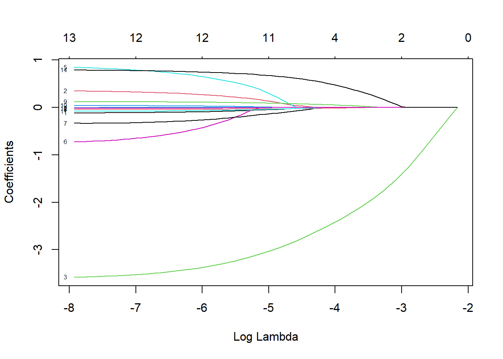
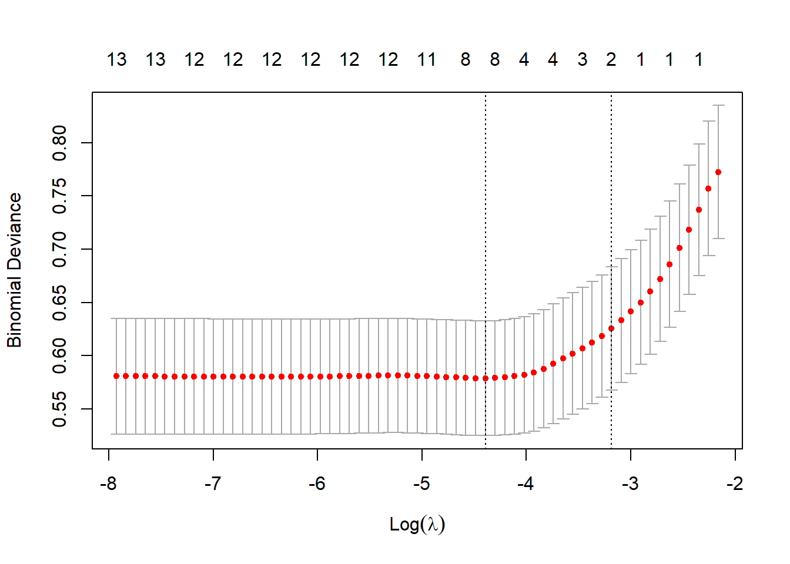
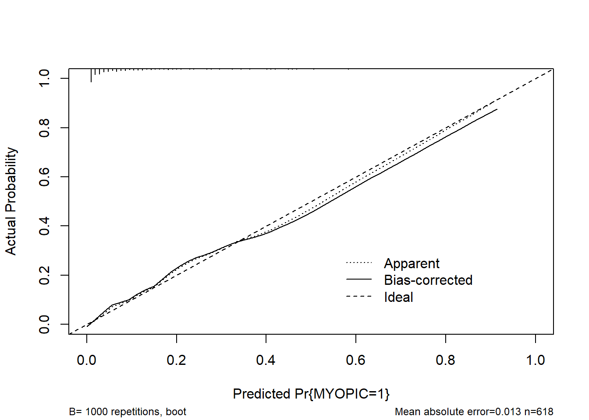
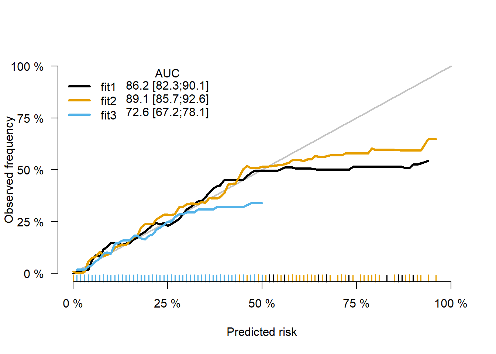

第 5 章
lasso <- glmnet(x,y,family = "binomial",alpha = 1)
print(lasso)##
## Call: glmnet(x = x, y = y, family = "binomial", alpha = 1)
##
## Df %Dev Lambda
## 1 0 0.00 0.115200
## 2 1 2.76 0.105000
## 3 1 5.36 0.095630
## 4 1 7.78 0.087140
## 5 1 9.99 0.079400
## 6 1 11.99 0.072340
## 7 1 13.78 0.065920
## 8 1 15.35 0.060060
## 9 1 16.73 0.054720
## 10 2 18.06 0.049860
## 11 2 19.49 0.045430
## 12 2 20.74 0.041400
## 13 3 21.91 0.037720
## 14 3 23.02 0.034370
## 15 3 23.98 0.031320
## 16 4 24.92 0.028530
## 17 4 25.79 0.026000
## 18 4 26.54 0.023690
## 19 4 27.19 0.021580
## 20 4 27.75 0.019670
## 21 4 28.23 0.017920
## 22 4 28.64 0.016330
## 23 5 29.01 0.014880
## 24 8 29.43 0.013560
## 25 8 29.82 0.012350
## 26 8 30.15 0.011250
## 27 8 30.44 0.010250
## 28 9 30.73 0.009343
## 29 10 31.00 0.008513
## 30 11 31.26 0.007757
## 31 11 31.48 0.007068
## 32 11 31.68 0.006440
## 33 11 31.84 0.005868
## 34 12 31.99 0.005347
## 35 12 32.12 0.004872
## 36 12 32.23 0.004439
## 37 12 32.32 0.004045
## 38 12 32.40 0.003685
## 39 12 32.47 0.003358
## 40 12 32.53 0.003060
## 41 12 32.57 0.002788
## 42 12 32.61 0.002540
## 43 12 32.65 0.002314
## 44 12 32.68 0.002109
## 45 12 32.70 0.001921
## 46 12 32.72 0.001751
## 47 12 32.74 0.001595
## 48 12 32.75 0.001454
## 49 12 32.76 0.001324
## 50 12 32.77 0.001207
## 51 12 32.78 0.001100
## 52 12 32.79 0.001002
## 53 12 32.79 0.000913
## 54 12 32.80 0.000832
## 55 12 32.80 0.000758
## 56 12 32.81 0.000691
## 57 13 32.81 0.000629
## 58 13 32.81 0.000573
## 59 13 32.81 0.000522
## 60 13 32.81 0.000476
## 61 13 32.82 0.000434
## 62 13 32.82 0.000395
## 63 13 32.82 0.000360plot(lasso,xvar="lambda",label = TRUE)
5.0.1 传入一个lambda值看看
loss.coef <- predict(lasso,s=0.05,type = 'coefficients')
loss.coef## 15 x 1 sparse Matrix of class "dgCMatrix"
## s1
## (Intercept) -1.04549610
## AGE .
## GENDER .
## SPHEQ -1.40167370
## AL .
## ACD .
## LT .
## VCD .
## SPORTHR .
## READHR .
## COMPHR .
## STUDYHR .
## TVHR .
## DIOPTERHR .
## PARENTS 0.01645111type=c(“link”, “response”, “class”, “coefficients”, “nonzero”)。link给出的是线性预测值，即进行logit变化前的值，函数默认值；response给出的是概率预测值，即进行logit变换之后的值；clase给出0/1预测值；coefficients给出的是指定λ值的模型系数；nonzero给出指定的定λ值时系数不为0的模型变量。
5.1 cv交叉验证
lasso.cv <- cv.glmnet(x,y, alpha=1, family="binomial")
plot(lasso.cv)
lasso.cv_auc <- cv.glmnet(x,y,alpha=1,family="binomial",type.measure = "auc")
plot(lasso.cv_auc)
横坐标是lambda的对数值，也就是惩罚力度，值越大，惩罚力度越大。纵坐标是模型的MSE(均方误差)。图形上方横坐标是自变量数量。随着lambda的增加，MSE不断变化。第一条虚线表示MSE最小值对应的lambda值，第二条虚线表示距离均方误差一个标准误时的lambda值（最优解）
coef(lasso.cv , s = c(1,0.1,0.01,0.001))## 15 x 4 sparse Matrix of class "dgCMatrix"
## s1 s2 s3 s4
## (Intercept) -1.906893 -1.7282362 0.16212541 4.02046678
## AGE . . -0.02171082 -0.10849682
## GENDER . . 0.04626298 0.32335354
## SPHEQ . -0.2400235 -2.82801562 -3.51734389
## AL . . . .
## ACD . . 0.01674432 0.78087139
## LT . . . -0.63712500
## VCD . . -0.07605748 -0.31816768
## SPORTHR . . -0.02514996 -0.03991801
## READHR . . 0.07966571 0.11800176
## COMPHR . . . 0.03702366
## STUDYHR . . -0.02353405 -0.07749223
## TVHR . . . -0.01674881
## DIOPTERHR . . . .
## PARENTS . . 0.61989773 0.77437955lasso.cv_min <- lasso.cv$lambda.min %>%
print()## [1] 0.01235143lasso.coef <- coef(lasso.cv$glmnet.fit,s=lasso.cv_min,exact = F)
lasso.coef## 15 x 1 sparse Matrix of class "dgCMatrix"
## s1
## (Intercept) -0.470162310
## AGE -0.009058156
## GENDER 0.015668468
## SPHEQ -2.694167376
## AL .
## ACD .
## LT .
## VCD -0.036936193
## SPORTHR -0.022001607
## READHR 0.071207248
## COMPHR .
## STUDYHR -0.012574109
## TVHR .
## DIOPTERHR .
## PARENTS 0.577869537我们可以试一下如果选择1s是什么情况
lasso.cv_1se <- lasso.cv$lambda.1se#通常使用距离MSE最小一个标准差lambda作为最合适的，直接调用即可
lasso.coef_1se<- coef(lasso.cv$glmnet.fit,s=lasso.cv_1se,exact = F)
lasso.coef_1se## 15 x 1 sparse Matrix of class "dgCMatrix"
## s1
## (Intercept) -1.0378542
## AGE .
## GENDER .
## SPHEQ -1.6514186
## AL .
## ACD .
## LT .
## VCD .
## SPORTHR .
## READHR .
## COMPHR .
## STUDYHR .
## TVHR .
## DIOPTERHR .
## PARENTS 0.12208825.2 lasso在测试集上的表现
newx=as.matrix(test[4:17])
lasso.y <- predict(lasso,newx = newx,type = "response",s=0.01235)
plot(lasso.y,test$MYOPIC,xlab="Predicted",ylab="Actual",main="lasso")
5.3 建立模型并绘制列线图
5.3.1 建立一个模型吧
library(rms)## 载入需要的程辑包：Hmisc## 载入需要的程辑包：survival##
## 载入程辑包：'survival'## The following object is masked from 'package:caret':
##
## cluster## 载入需要的程辑包：Formula##
## 载入程辑包：'Hmisc'## The following objects are masked from 'package:dplyr':
##
## src, summarize## The following objects are masked from 'package:base':
##
## format.pval, units## 载入需要的程辑包：SparseM##
## 载入程辑包：'SparseM'## The following object is masked from 'package:base':
##
## backsolve##
## 载入程辑包：'rms'## The following objects are masked from 'package:car':
##
## Predict, vifdd <- datadist(myopia)
options(datadist=dd)
model<- lrm(MYOPIC~SPHEQ+PARENTS+GENDER+ACD+SPORTHR+READHR,data=myopia,x=TRUE,y=TRUE)5.3.2 列线图1
nom1 <- nomogram(model,fun = plogis,fun.at=c(0.001,0.01,0.05,0.1,seq(0.2,0.8,by=0.2),0.95,1.0),lp=FALSE,funlabel = 'myopia')
plot(nom1) ### 列线图2
### 列线图2
# # install.packages("DynNom")
# library(DynNom)
# model_dynnom <- glm(MYOPIC~SPHEQ+PARENTS+GENDER+ACD+SPORTHR+READHR,data=myopia,family = binomial())
# DynNom(model_dynnom,DNtitle = "Nomogram",DNxlab = "Probability")5.3.3 C统计量
myopia$predvalue <- predict(model)
# install.package('ROCR')
library(ROCR)## Warning: 程辑包'ROCR'是用R版本4.1.3 来建造的pred <- prediction(myopia$predvalue,myopia$MYOPIC)
perf <- performance(pred,"tpr","fpr")
plot(perf)
abline(0,1)
auc <- performance(pred,"auc")
auc@y.values## [[1]]
## [1] 0.8914178# model_glm <- glm(MYOPIC~SPHEQ+PARENTS+GENDER+ACD+SPORTHR+READHR,data = myopia,family = binomial())
# myopia$predvalue <- predict(model_glm)
# # install.package('ROCR')
# library(ROCR)
# pred <- prediction(myopia$predvalue,myopia$MYOPIC)
# perf <- performance(pred,"tpr","fpr")
# plot(perf)
# abline(0,1)
# auc <- performance(pred,"auc")
# auc@y.values5.3.4 校正曲线
cal1 <- calibrate(model,method = "boot",B=1000)
plot(cal1,xlim=c(0,1.0),ylim=c(0,1.0))
##
## n=618 Mean absolute error=0.013 Mean squared error=3e-04
## 0.9 Quantile of absolute error=0.0325.3.5 ps：同时绘制多条
formula1 <- as.formula(MYOPIC~SPHEQ)
formula2 <- as.formula(MYOPIC~SPHEQ+PARENTS+GENDER+ACD+SPORTHR+READHR)
formula3 <- as.formula(MYOPIC~PARENTS+GENDER+ACD+SPORTHR+READHR)
DD=datadist(myopia)
options(datadist='DD')fit1 = glm(formula1, data=myopia,family = binomial())
fit2 = glm(formula2, data=myopia,family = binomial())
fit3 = glm(formula3, data=myopia,family = binomial())
library(riskRegression)## Warning: 程辑包'riskRegression'是用R版本4.1.3 来建造的## riskRegression version 2022.03.22xb <- Score(list("fit1"=fit1,
"fit2"=fit2,
"fit3"=fit3),
formula=MYOPIC~1,
null.model = FALSE,
conf.int =TRUE,
plots =c("calibration","ROC"),
metrics = c("auc"),
B=1000,M=50,
data=myopia)
plotCalibration(xb)## Warning in getLegendData(object = x, models = models, times = tp, auc.in.legend
## = auc.in.legend, : Cannot show Brier score as it is not stored in object. Set
## metrics='brier' in the call of Score.
5.4 共线性讨论
#collinearity
collin <- cor(subset(myopia, select=c(SPHEQ, PARENTS, SPORTHR, GENDER ,ACD , STUDYHR,READHR)))
# dev.off()
library(corrplot)
corrplot(collin , type="upper")
M <- collin
cor.mtest <- function(mat, ...) {
mat <- as.matrix(mat)
n <- ncol(mat)
p.mat<- matrix(NA, n, n)
diag(p.mat) <- 0
for (i in 1:(n - 1)) {
for (j in (i + 1):n) {
tmp <- cor.test(mat[, i], mat[, j], ...)
p.mat[i, j] <- p.mat[j, i] <- tmp$p.value
}
}
colnames(p.mat) <- rownames(p.mat) <- colnames(mat)
p.mat
}
# matrix of the p-value of the correlation
p.mat <- cor.mtest(subset(myopia, select=c(SPHEQ, PARENTS,
SPORTHR, GENDER ,ACD , STUDYHR,READHR)))
head(p.mat[, 1:6])## SPHEQ PARENTS SPORTHR GENDER ACD
## SPHEQ 0.000000e+00 1.351303e-06 0.577189469 4.206886e-01 1.841368e-09
## PARENTS 1.351303e-06 0.000000e+00 0.270789297 5.333279e-01 2.718984e-03
## SPORTHR 5.771895e-01 2.707893e-01 0.000000000 1.025312e-02 6.185484e-02
## GENDER 4.206886e-01 5.333279e-01 0.010253119 0.000000e+00 1.757790e-10
## ACD 1.841368e-09 2.718984e-03 0.061854843 1.757790e-10 0.000000e+00
## STUDYHR 1.730743e-01 3.891322e-01 0.003930083 5.391071e-01 1.982234e-01
## STUDYHR
## SPHEQ 0.173074294
## PARENTS 0.389132155
## SPORTHR 0.003930083
## GENDER 0.539107149
## ACD 0.198223365
## STUDYHR 0.000000000col <- colorRampPalette(c("#BB4444", "#EE9988", "#FFFFFF",
"#77AADD", "#4477AA"))
#create correlation plot
corrplot(M, method="color", col=col(200),
type="upper", order="hclust",
addCoef.col = "black", # Add coefficient of correlation
tl.col="black", tl.srt=45, #Text label color and rotation
# Combine with significance
p.mat = p.mat, sig.level = 0.01, insig = "blank",
# hide correlation coefficient on the principal diagonal
diag=FALSE )
vif(model)## SPHEQ PARENTS GENDER ACD SPORTHR READHR
## 1.034080 1.032454 1.101447 1.092771 1.054899 1.060157VIF 值 >= 10 表示高共线性。在这种情况下，所有 vif 值都接近 小于10